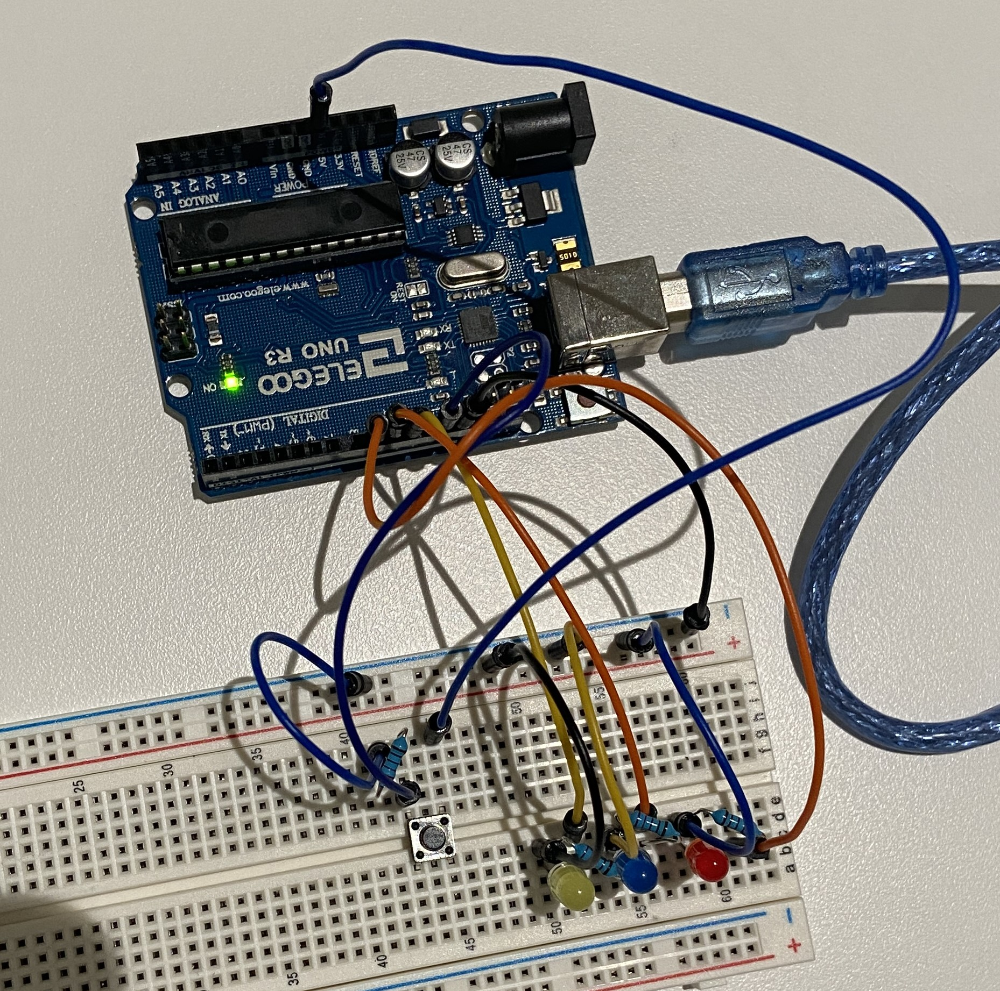
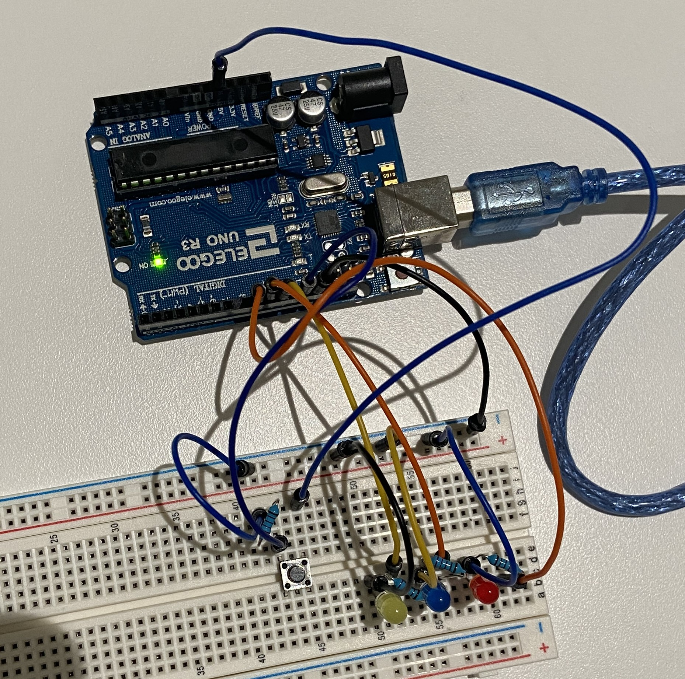
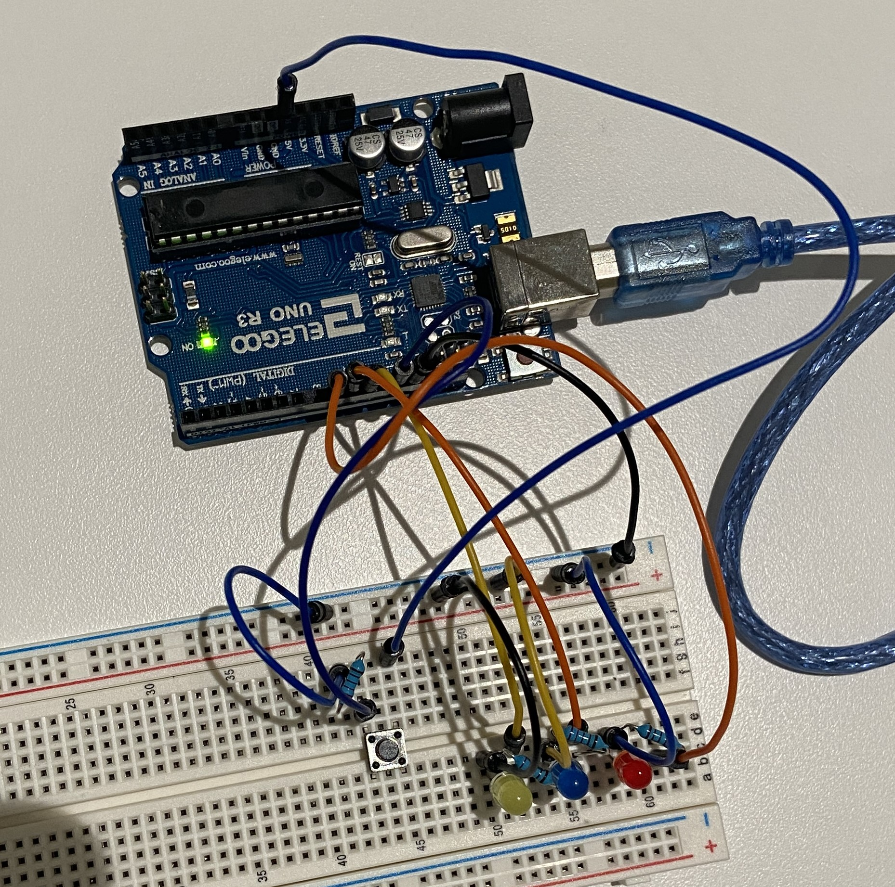
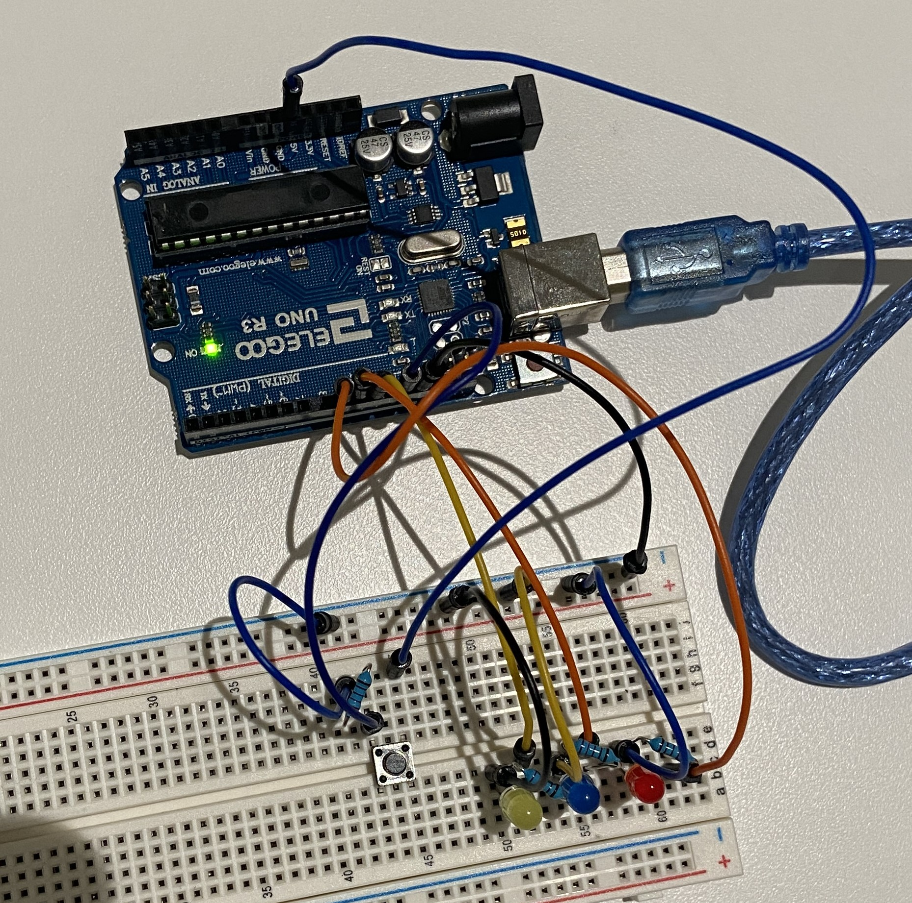
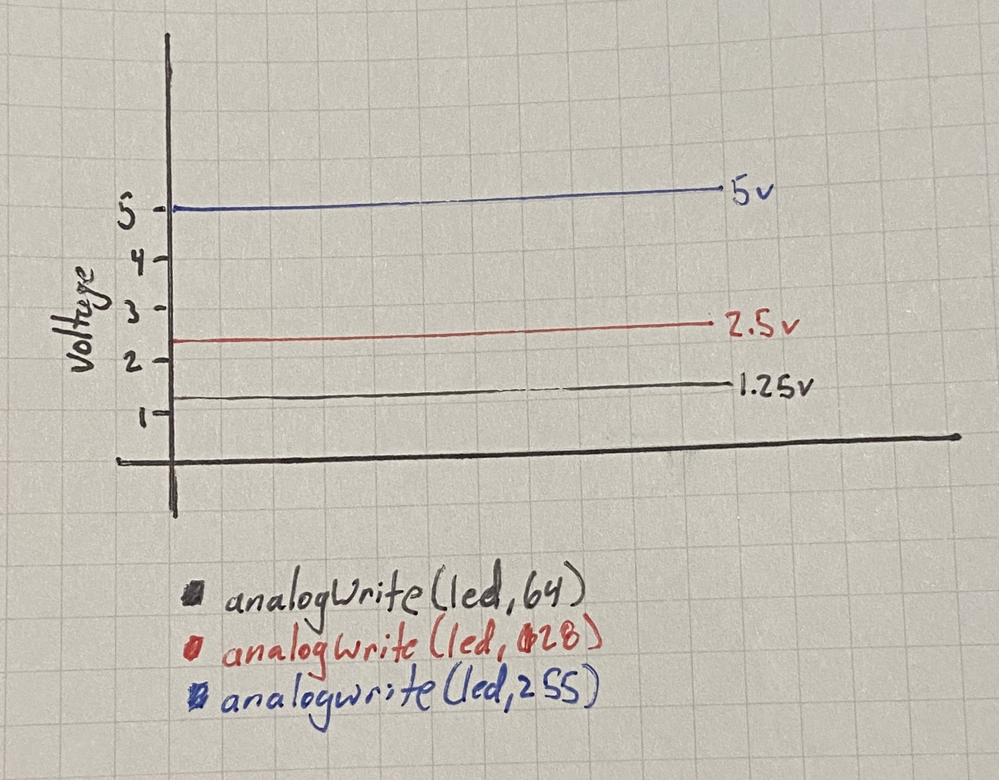

On the left you can see a gif of the assignment working. It fades through the three LEDs and then repeats the process when the button is pressed.
// constants won't change. They're used here to set pin numbers:
const int buttonPin = 13; // the number of the pushbutton pin
const int ledPin9 = 9; // the number of the LED pin
const int ledPin10 = 10; // the number of the LED pin
const int ledPin11 = 11; // the number of the LED pin
// variables will change:
int buttonState = 0; // variable for reading the pushbutton status
int brightness = 0; // Starting brightness of the led
int fadeAmount = 1; // how many points to fade the LED by
void setup() {
// initialize the LED pins as an output:
pinMode(ledPin9, OUTPUT); //
pinMode(ledPin10, OUTPUT);
pinMode(ledPin11, OUTPUT);
// initialize the pushbutton pin as an input:
pinMode(buttonPin, INPUT);
}
void loop() {
buttonState = digitalRead(buttonPin); // read the state of the pushbutton value:
// check if the pushbutton is pressed. If it is, fade through all the leds
if (buttonState == HIGH) {
fadeLED(ledPin9); // fade led on pin 9
fadeLED(ledPin10); // fade led on pin 10
fadeLED(ledPin11); // fade led on pin 11
} else {
digitalWrite(ledPin9, LOW);
digitalWrite(ledPin10, LOW);
digitalWrite(ledPin11, LOW);
}
}
void fadeLED(int LEDnum) {
int brightness = 0; // sets the initial brightness to zero
for (int i = 0; i < 255 * 2; i++) { // Goes through a cycle of getting brighter then dimmer
analogWrite(LEDnum, brightness); // set the brightness of pin 9:
brightness = brightness + fadeAmount; // change the brightness for next time through the loop:
// reverse the direction of the fading at the ends of the fade:
if (brightness <= 0 || brightness >= 255) {
fadeAmount = -fadeAmount; // Changes the fade amount to be inverse, so that it reverses direction
}
delay(1); // Adds a delay before changing the brightness again. Makes the fade slower
}
digitalWrite(LEDnum, 0); // Resets the led to be off
}
I limited the current going through the button by added a 220 ohm resistor. I chose this one in part because we have so many but also because it would keep the current less than 40 mA. The reason I wanted to keep it less than 40 mA is because that is the max that a single pin can handle. By doing it this way we are much lower than the maximum current allowed.
1: Chart where the X axis is time and the Y axis is voltage.
2: Given your schematic, circuit, and firmware, assuming the only thing that draws current is your LEDs, how long would your circuit run if powered by a 1200 mAh battery?
My three LEDs draw 15, 7.7, and 15 mA. Which is 37.7 mA. The battery is 1200 mAh. So we can just do 1200 / 37.7 which gives us 31.83 hours. This is assuming that all of the LEDs are on the whole time. If we want to know how long it would last with the button pressed and it running in a cycle we first should find out how long a cycle is and how much power it draws during it. (15mh * (.61sec * 1/3600 [to convert hours to seconds])) is .00254 mhA during the first and third LED. (7.7mh * (.61sec * 1/3600 [to convert hours to seconds])) is .00131 during the second LED. So in 1.83 seconds it uses .00639 mhA. 1200 / .00639 = 187793.42 which times 1.83 is 343,662 seconds. Which gives us our anwer of 95.5 hours. Which makes sense since it is 3 times longer than if they were all running at once. We could have just done 31.83 * 3 to get our answer, but then we would have missed out on a lot of fun math.